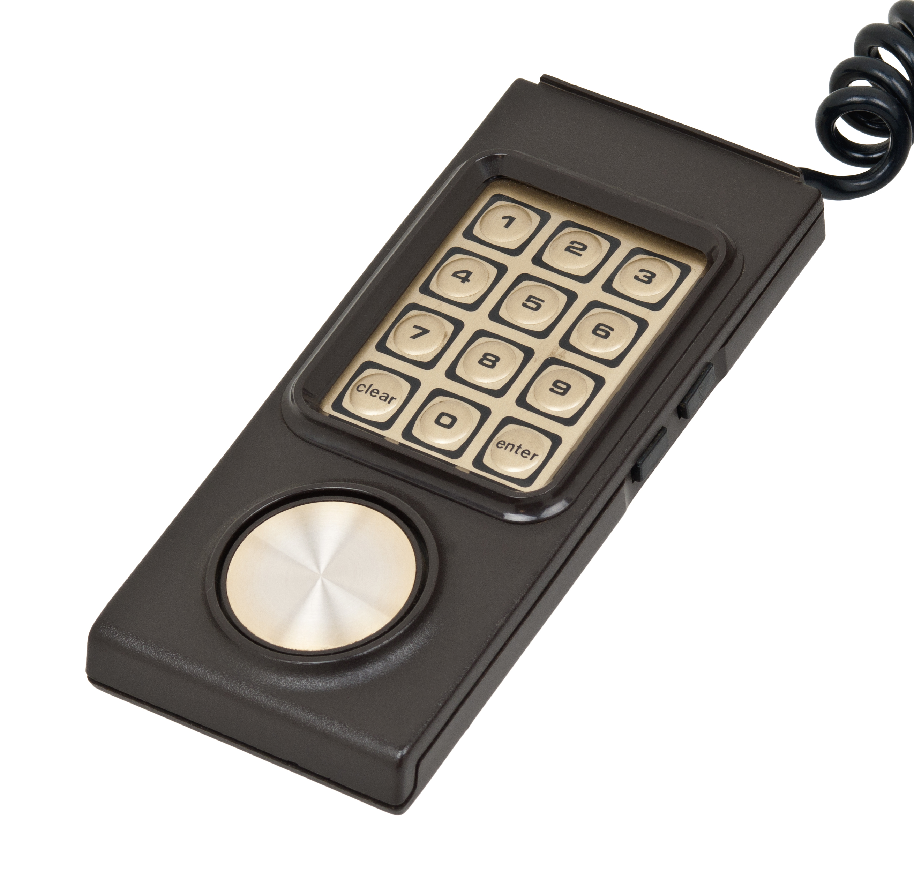

The Paper That Was the Buttons
Every Intellivision game came with a printed paper overlay that slid over the controller's telephone keypad and became the game's controls. One generic numeric keypad, endlessly re-bodied by a piece of card stock — software-defined UI before anyone had software-defined anything.

In 1979 the Intellivision bet everything on a telephone keypad and a piece of paper. Not a computer program running on the controller — there was no display there, no software that could redraw itself. The keypad was twelve plastic buttons in a fixed grid, and that was all it would ever be. To make twelve buttons work for a baseball game and then a maze and then a strategy game, Mattel did not change the hardware. They printed a card.
Every Intellivision cartridge shipped with two thin plastic overlays. You slid one down over the controller's keypad, and suddenly those twelve buttons were baseball. The printed picture showed you which key meant bunt, which meant steal, which meant which baserunner. The bloody thing was beautiful and faintly absurd: the meaning of every input lived on a removable sheet of card stock that you pressed against the membrane to press the button through. The hardware never changed. The interface was a piece of paper you could lose under the couch.
I love this because it is the most honest version of an idea that took the industry decades to rebrand. "Software-defined controls." "Contextual UI." "Reconfigurable input." The Intellivision had it in 1979, and it was called an overlay. When you slid it on, the same physical keypad became a sports playbook, a strategy grid, a set of text keys. The museograph in me wants to call it a physical ancestor of the touchscreen's magic trick — the exact same surface, meaning whatever the situation wants it to mean. The child in me just remembers how satisfying it was to seat the card and feel the game change.
The controller earned its oddness in the rest of its anatomy too. Beside the keypad sat a free-spinning plastic disc you rolled with your thumb — up to sixteen directions, a smooth analog wheel translated into discrete steps, so your player glided instead of tacking like every joystick of the era did. Two channels of input at once: continuous motion from the disc, gated commands from the paper-taught keypad. That is a real design idea, not a gimmick.
The overlay is not alone in the museum. It is a cousin of the HP-150's touchscreen with a printed template you laid over the glass, and of the Sharp Wizard's transparent overlay cards that gave a touch panel its functions. But where those were productivity devices, the Intellivision took the trick into the living room, into the mass market, into your hands on a Tuesday evening. A telephone keypad and a printed card, and it could be anything.
There is a heaviness to it too, of the kind this museum keeps on purpose. The Intellivision was designed as a home computer — the marketing promised a Keyboard Component that would add a typewriter and tap videotex and BASIC into your TV. It was delayed, delayed, delayed, the "coming in spring" of a thousand consumer jokes, until the FTC got involved and Mattel pulled the plug, refunding buyers and asking them to sign away any hope of future software. Roughly four thousand Keyboard Components had been made. The console that promised to be a computer shipped, for most of its life, with a paper-overlaid keypad as its interface to software — which, for the interaction, turned out to be exactly enough.
The museum keeps consoles as interaction first, brand second. The Fairchild Channel F gave you a grip with three grammars in one knob; the Bally Astrocade hid your BASIC program in the pixels; the Intellivision gave you a telephone keypad that a piece of card stock could turn into anything. Same hardware, endless bodies — software-defined UI in its most literal, most forgettable, most lovable form. You could lose the overlay under the couch, and then you learned, by losing it, exactly what the interface was made of.